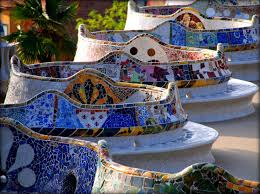
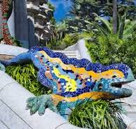
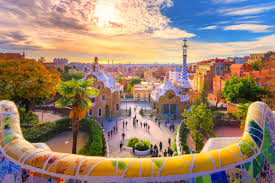
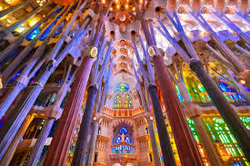
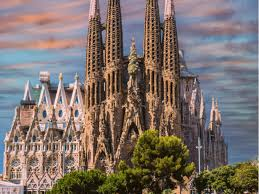

List of Gaudi buildings
- Sagrada Família (1883–1926)
- Church of Colònia Güell (1908–1914)
- Palau Güell (1886–1888)
- El Capricho (1883–1885)
Born: June 25, 1852, Reus, Spain
Died: June 10, 1926 (age 73 years), Old Hospital de la Santa Creu, Barcelona, Spain
Iconic Artwork by Antony Gaudi
Park Güell
In 1886 Eusebi Güell entrusted Gaudí with building his new house, the Palau Güell in Nou de la Rambla street in the old quarter of the city. Later, in 1895 Gaudí built a winery in Garraf county in collaboration with Francesc Berenguer. In 1898 he planned the church for Colònia Güell, home to the workers at the large textile factory that the industrialist owned on the outskirts of Barcelona. And finally, in 1900, Gaudí was given the assignment of designing Park Güell.
Park Güell is a privatized complex of parks, gardens and architectural elements in the Gràcia district of Barcelona, Catalonia, Spain. The site is located in the La Salut neighborhood on the southern side of a hill known as the Turó del Carmel, part of the Collserola mountain range.
In Barcellona

Sagrada Familia
The Basílica i Temple Expiatori de la Sagrada Família, otherwise known as Sagrada Família, is a church under construction in the Eixample district of Barcelona, Catalonia, Spain. It is the largest unfinished Catholic church in the world.